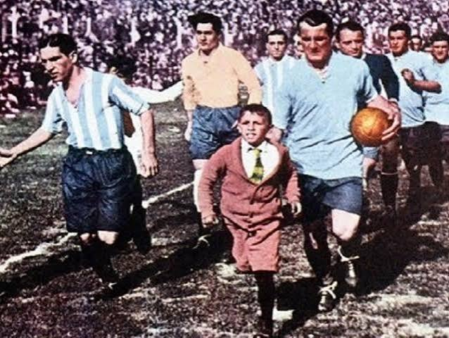
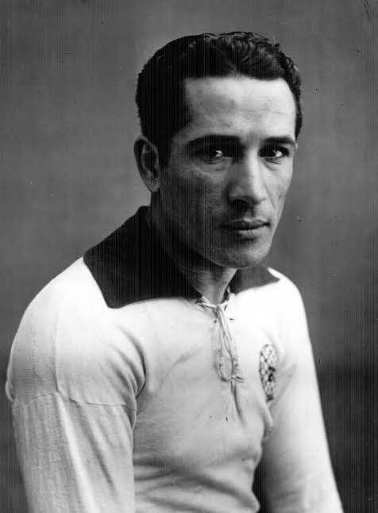
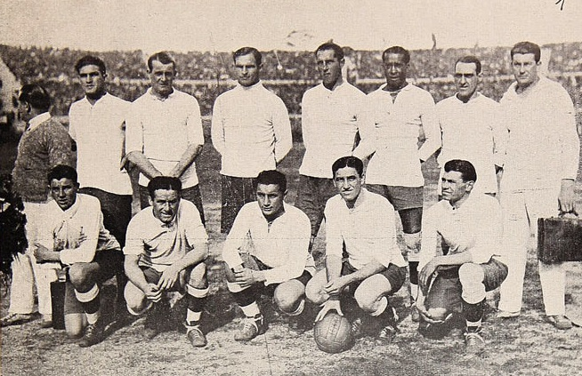

História da Edição
Descrição completa da copa...
Registros Históricos
Espaços reservados para imagens icônicas desta edição.


Idealizada por Jules Rimet, presidente da FIFA na época, a primeira Copa do Mundo ocorreu no Uruguai em 1930. O Uruguai foi escolhido por ser o atual bicampeão olímpico e por celebrar o centenário de sua independência. Naquela edição inaugural, apenas 13 países participaram devido aos custos elevados e às longas viagens transatlânticas de navio.
Com o passar das décadas, o torneio se transformou no maior evento esportivo de modalidade única do planeta, quebrando recordes de público e audiência a cada quatro anos, unindo culturas e consagrando nações.

O Uruguai recebe e vence a primeira Copa do Mundo. Disputada em Montevidéu, a grande final contra a Argentina consagrou a seleção celeste com o título mundial no histórico Estádio Centenário.
Após a Segunda Guerra Mundial, a Copa voltou no Brasil. Precisando de apenas um empate na rodada final, a seleção brasileira perdeu de virada por 2 a 1 para o Uruguai diante de 174 mil torcedores no Maracanã.
O Brasil conquista seu primeiro título mundial na Suécia. Um jovem de apenas 17 anos chamado Pelé chocou o mundo com sua genialidade, marcando 6 gols na fase final e iniciando a era de ouro canarinho.
O Brasil encanta o planeta com o melhor time de todos os tempos. Esta edição no México marcou o tricampeonato brasileiro definitivo e a estreia histórica dos cartões amarelos e vermelhos na arbitragem.
Após mais de duas décadas de jejum, o Brasil conquista o tetracampeonato nos Estados Unidos. Liderados por Romário, o título veio na primeira decisão por pênaltis da história da Copa, contra a Itália.
No Catar, a Argentina de Lionel Messi conquistou o tricampeonato na final mais espetacular de todos os tempos. Messi marcou dois gols e garantiu a taça que faltava em sua carreira brilhante.
Clique em "Ver detalhes" para explorar dados detalhados, curiosidades exclusivas e fotos de cada uma das 22 edições.
Mostre que você é um craque e acerte as perguntas sobre a história da Copa do Mundo!
O quiz é composto por 5 perguntas de múltipla escolha baseadas em fatos históricos e curiosidades reais das Copas do Mundo.